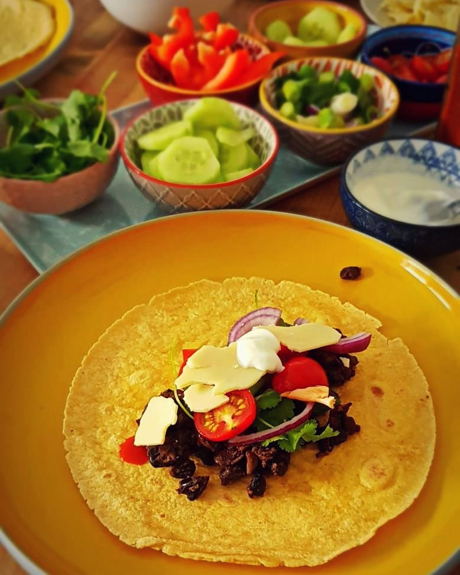

We often say that the kids don't want to eat healthy food because it is not tasty enough. But do we parents and role models eat healthy food? Do we explain to them why to eat fresh vegetable, fruit, nuts or legumes? Do we offer them healthy meals every day?
Children's relationship with food depends on how authentic we behave. We could show them how a healthy diet looks and taste. Then they will be motivated to try it.
Any personal experience?
🥕🫐🥗🍜👨👩👧👦
Často hovorievame, že deti nechcú jesť zdravé potraviny lebo im nechutia. Ale my, ako rodičia a vzory pre naše deti, jeme zdravo? Vysvetlujeme im prečo by mali jesť čerstvú zeleninu, ovocie, orechy, alebo strukoviny? Ponúkame im zdravé jedlá každý deň?
Vzťah naších detí k zdravému stravovaniu zavísi na tom, ako autenticky sa správame. Mohli by sme im ukázať ako vyzerá a chutí zdravá strava. Potom budu motivované skúsiť ju.
Nejaká osobná skúsenosť?
🥕🫐🥗🍜👨👩👧👦
#foodforchildren #freshfruitsandveggies #happynutsday #healthyeating #motivationforlife #instainspiration #foodlovers #zdravejedlo #chutnejedlo #predeti #cerstve #ovocie #zelenina #orechy #strukoviny #inšpirácia #potd